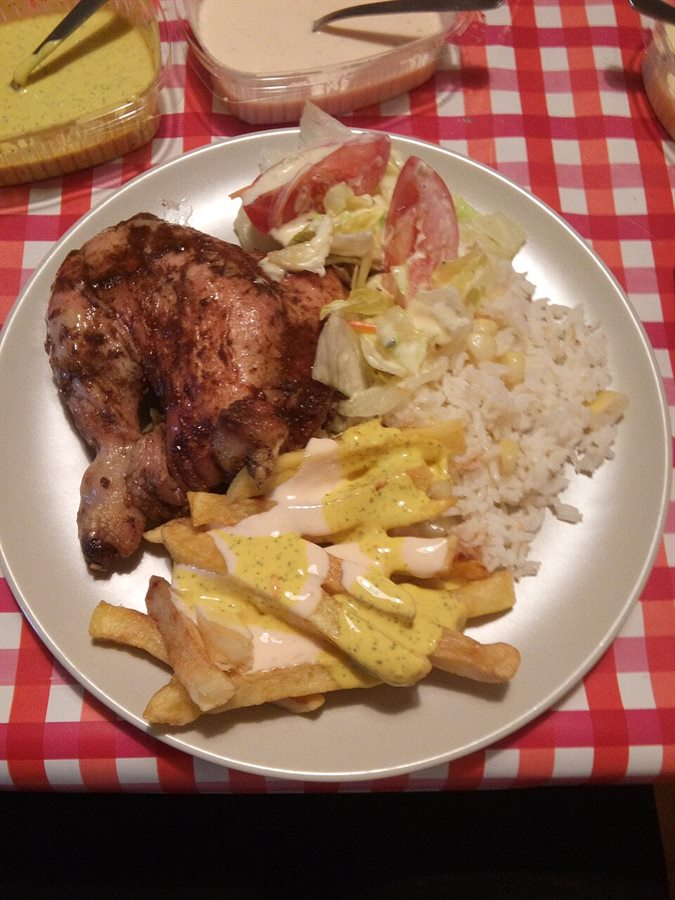
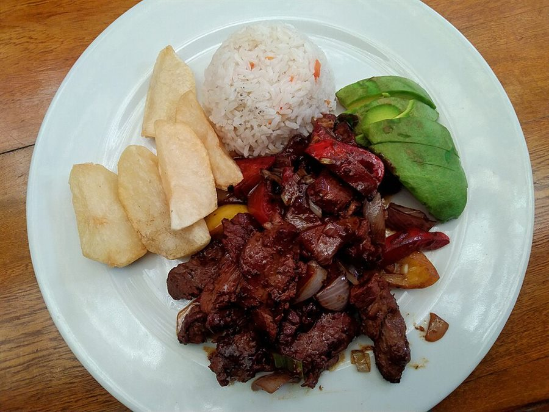
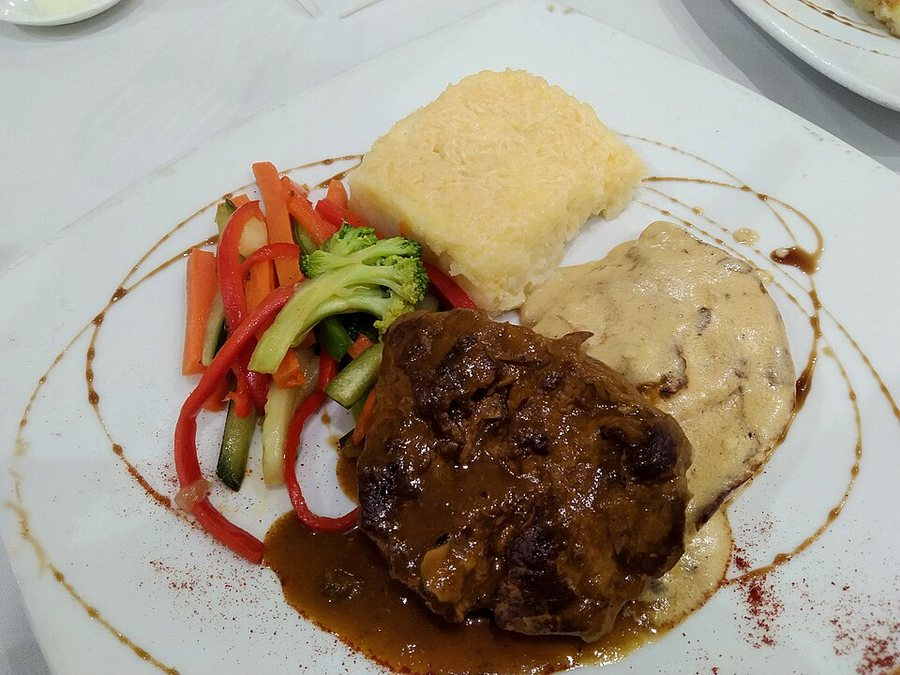
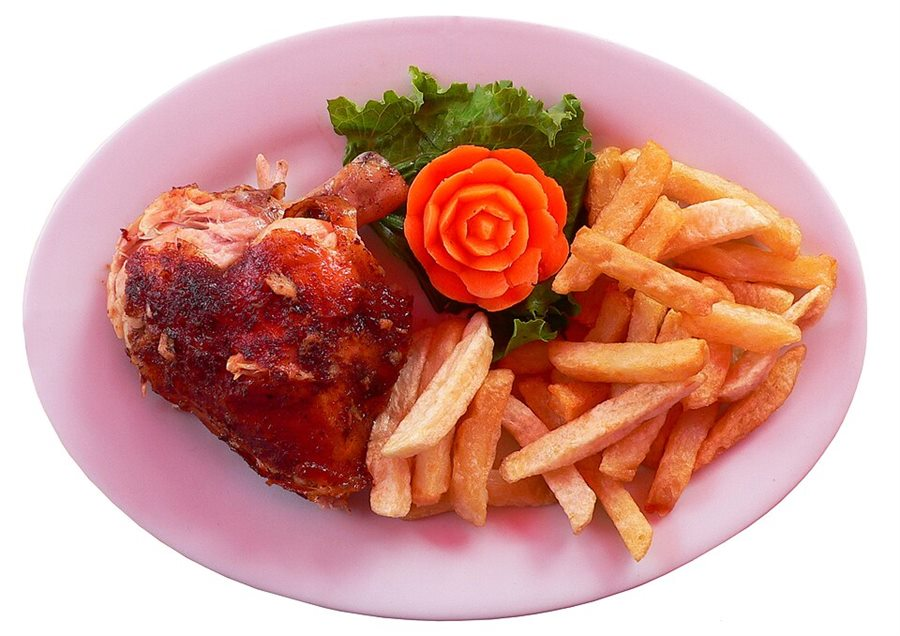
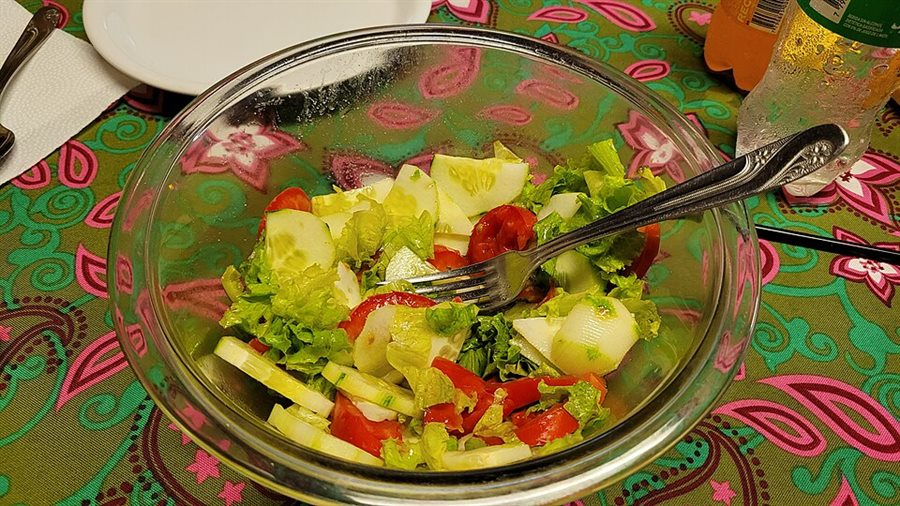
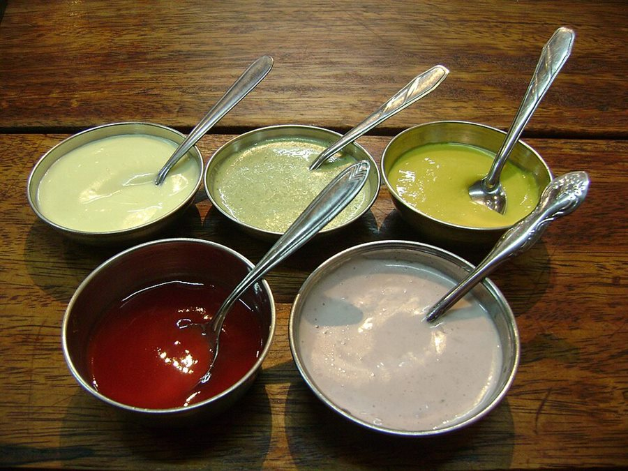
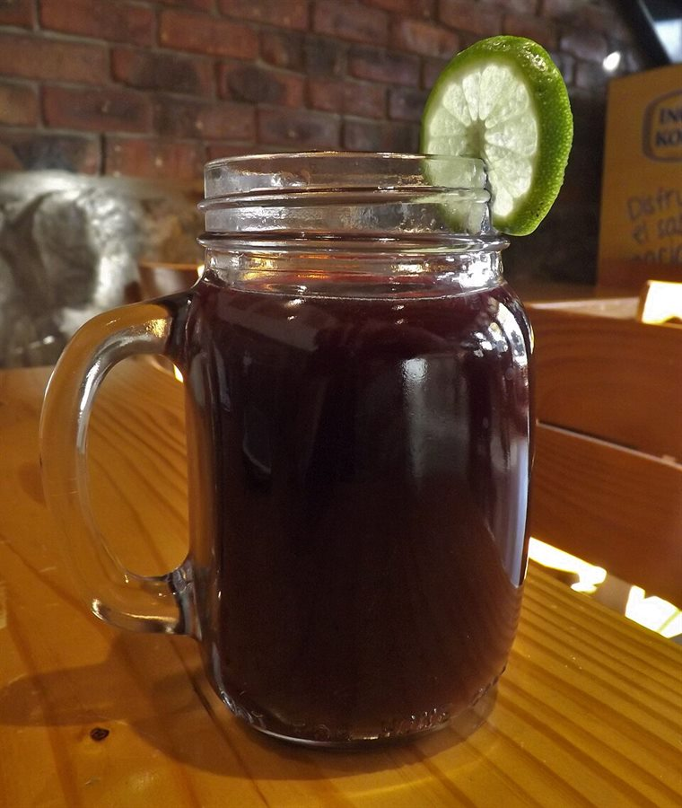
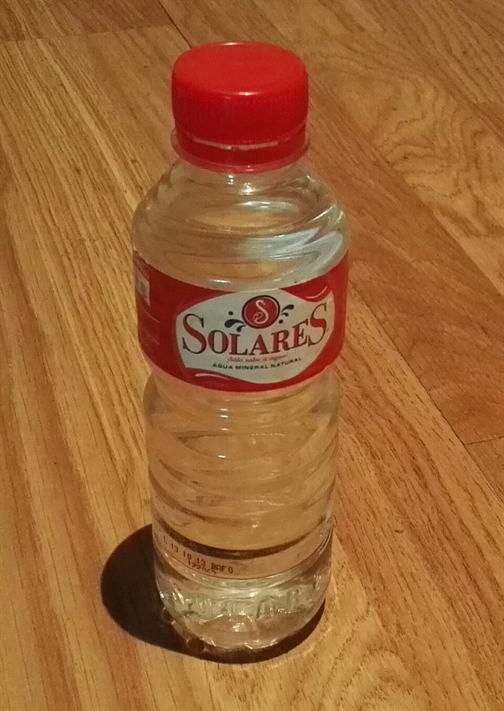

Errores de cobro, tiempos de espera y pérdida de trazabilidad por depender de la memoria y el papel.
Una solución pequeña para un problema real.
Pelícanos Bros es un negocio de pollo al carbón en Moquegua que operaba con un flujo de venta completamente manual: el cajero consultaba el menú de memoria, calculaba el total a mano, registraba la venta en papel, descontaba existencias en un kardex físico y enviaba la comanda a cocina de forma verbal.
Este proyecto documenta ese proceso AS-IS y construye un prototipo web que digitaliza la toma de pedidos, el cálculo de precios, la comunicación con cocina y el seguimiento del cliente, sin alterar la preparación artesanal.
Aplicación web con menú digital, personalización de platos, checkout y panel administrativo.
Prototipo funcional, documentación, presentación y carpeta lista para publicar en GitHub Pages.
Idea central
La transformación digital no empieza con más tecnología, sino con entender el proceso que se quiere mejorar. El sistema automatiza lo repetitivo y deja a las personas lo que aportan valor: cocinar y atender.
El caos manual: cinco fricciones del proceso actual.
El análisis AS-IS identificó que el cajero concentraba casi toda la carga cognitiva del proceso. En horas pico, esa concentración producía errores y demoras en cadena.
El menú y la disponibilidad se verificaban mentalmente o caminando hacia la cocina, por cada cliente.
El importe total se sumaba a mano. Un error de suma se traducía en pérdida económica o reclamo.
Las existencias se descontaban en papel después de cada venta; con fila, el registro se omitía.
La orden llegaba a cocina a gritos o en papel, generando confusión y reprocesos.
La información de ventas estaba dispersa y no permitía decidir con datos actualizados.
No había una fuente única de verdad sobre productos disponibles y agotados.
Análisis de causas (Ishikawa)
| Categoría | Causas identificadas |
|---|---|
| Mano de obra | Falta de capacitación digital, errores de venta, conocimiento concentrado en una persona. |
| Método | Procesos manuales, pedidos desorganizados, ausencia de un sistema web. |
| Medición | Reportes tardíos, ventas mal registradas, falta de indicadores. |
| Materiales | Datos de productos incompletos, descontrol de stock. |
| Máquinas | Equipos insuficientes, computadoras lentas, fallas técnicas. |
| Medio ambiente | Competencia digital, internet inestable, cambios del mercado. |
Objetivo general y alcance del prototipo.
Objetivo general: diseñar un sistema web de ventas y pedidos para Pelícanos Bros que automatice el registro y el cobro de la atención presencial, mejore la trazabilidad y reduzca los errores del proceso manual.
Objetivos específicos
- Documentar la operación física actual (AS-IS), sus actores, gateways y puntos críticos.
- Detectar cuellos de botella en cálculos, disponibilidad, registro de ventas y comunicación con cocina.
- Diseñar la arquitectura TO-BE y construir un prototipo funcional que demuestre la viabilidad.
- Validar la experiencia con usuarios demo: cliente que pide y administrador que gestiona.
Alcance incluido
- Registro e inicio de sesión de clientes con historial privado.
- Menú digital con fotos, precios, categorías y disponibilidad.
- Personalización de acompañamientos con cálculo automático del precio.
- Carrito, checkout, hora de recojo y método de pago declarado.
- Panel administrativo con resumen, pedidos, cocina, clientes y menú.
- Verificación manual de pagos, cambios de estado y trazabilidad.
- Exportación CSV y comanda imprimible.
- Documentación, presentación y guía de publicación en GitHub Pages.
Fuera de alcance
- Pasarela de pagos real (Yape, Plin o tarjeta).
- Backend, base de datos centralizada y sincronización multiusuario.
- Control de inventario por insumos o descuento automático de stock.
- Aplicación móvil nativa, delivery y reparto a domicilio.
Quién hace qué en el sistema.
| Actor | Rol | Responsabilidades |
|---|---|---|
| Cliente | Usuario final | Consulta el menú, personaliza su plato, confirma hora de recojo y pago, revisa su historial. |
| Administrador | Dueño o encargado | Verifica pagos, gestiona pedidos, organiza cocina, consulta clientes y actualiza menú/precios. |
| Cocina | Producción | Recibe la comanda digital, prepara el pedido y avanza el estado desde el tablero. |
| Sistema | Automatización | Calcula precios, asigna códigos, registra eventos, separa historiales y muestra información en tiempo real. |
Qué debe hacer el sistema.
Requerimientos funcionales
| ID | Requerimiento | Estado |
|---|---|---|
| RF-01 | Registrar clientes con nombre, correo, teléfono y contraseña. | Implementado |
| RF-02 | Autenticar clientes y administradores por separado. | Implementado |
| RF-03 | Mostrar menú por categorías con foto, descripción, precio y disponibilidad. | Implementado |
| RF-04 | Personalizar acompañamientos (con / sin / extra) y recalcular el precio. | Implementado |
| RF-05 | Gestionar carrito: agregar, quitar, cambiar cantidad y ver total. | Implementado |
| RF-06 | Confirmar pedido con hora de recojo, teléfono, método de pago y nota. | Implementado |
| RF-07 | Asignar código único y estado inicial al pedido. | Implementado |
| RF-08 | Mostrar al cliente solo sus propios pedidos e historial. | Implementado |
| RF-09 | Verificar pagos y marcarlos como pagados o pendientes. | Implementado |
| RF-10 | Cambiar estado del pedido: recibido, en preparación, listo, entregado, cancelado. | Implementado |
| RF-11 | Tablero de cocina ordenado por hora de recojo. | Implementado |
| RF-12 | Consultar historial completo por cliente desde el panel. | Implementado |
| RF-13 | Editar precio base y disponibilidad de productos. | Implementado |
| RF-14 | Exportar pedidos filtrados a CSV. | Implementado |
| RF-15 | Imprimir comanda de cocina en formato ticket. | Implementado |
Requerimientos no funcionales
| ID | Requerimiento | Cómo se atiende |
|---|---|---|
| RNF-01 | Usable desde celular y computadora. | Diseño responsive con CSS Grid/Flexbox y puntos de quiebre. |
| RNF-02 | Sin instalación para el usuario. | Aplicación web estática accesible desde el navegador. |
| RNF-03 | Despliegue simple y de bajo costo. | Compatible con GitHub Pages; no requiere backend para la demo. |
| RNF-04 | Separación de información por cliente. | Cada pedido se asocia a usuarioId y el historial filtra por sesión. |
| RNF-05 | Claridad de precios. | Desglose visible antes de confirmar y total guardado con el pedido. |
| RNF-06 | Trazabilidad básica. | Eventos de creación, pago y cambio de estado con fecha. |
| RNF-07 | Accesibilidad básica. | HTML semántico, etiquetas, foco visible, textos alternativos y navegación por teclado. |
Aplicación web estática en tres capas.
El prototipo usa HTML, CSS y JavaScript vanilla. La lógica de negocio vive en js/datos.js; la interfaz del cliente en js/cliente.js; la del administrador en js/admin.js. La persistencia demo usa localStorage.
Navegador
├── index.html → tienda del cliente
├── admin.html → panel de administración
├── presentacion.html → deck del proyecto
├── documentacion.html → este documento
├── css/
│ ├── estilos.css
│ ├── presentacion.css
│ └── documentacion.css
├── js/
│ ├── datos.js → usuarios, productos, pedidos, precios, auth
│ ├── ui.js → modales, toasts, descargas
│ ├── cliente.js → menú, carrito, checkout, historial
│ ├── admin.js → KPIs, pedidos, cocina, clientes, menú
│ └── presentacion.js → navegación del deck
└── img/
├── logo.svg
└── platos/ → fotos de productosDecisiones de diseño
Permite publicar en GitHub Pages y validar el flujo sin infraestructura. Es una limitación consciente, no un olvido.
Todo el acceso a usuarios, productos y pedidos pasa por PB, lo que facilita reemplazar localStorage por una API.
El cliente nunca ve el panel. El administrador tiene login y navegación propios, con estilos y prioridades distintas.
El cálculo se hace en una única función y se guarda con el pedido para que no cambie si luego se edita el menú.
Modelo de datos de la demo.
Las entidades se guardan como arreglos JSON en localStorage. Los nombres de claves están versionados para facilitar una futura migración.
| Entidad | Clave | Campos principales |
|---|---|---|
| Usuarios | pb_usuarios_v1 | id, nombre, usuario, correo, teléfono, passwordHash, rol, creadoEn. |
| Productos | pb_productos_v1 | id, nombre, categoría, precio, imagen, descripción, customizable, disponible, etiqueta. |
| Pedidos | pb_pedidos_v1 | id, código, usuarioId, cliente, items, total, métodoPago, estadoPago, estado, fechas, nota, eventos. |
| Sesión cliente | pb_sesion_cliente_v1 | ID del usuario autenticado en la tienda. |
| Sesión admin | pb_sesion_admin_v1 | ID del administrador autenticado en el panel. |
| Contador | pb_contador_v1 | Último número de pedido para generar códigos PB-000X. |
| Carrito | pb_carrito_v1 | Líneas del pedido en construcción, persistidas entre visitas. |
Estados del pedido
| Estado | Significado | Siguiente |
|---|---|---|
| pendiente | Pedido recibido, aún no iniciado en cocina. | en_preparacion |
| en_preparacion | La cocina está preparando el pedido. | listo |
| listo | Listo para recoger en tienda. | entregado |
| entregado | El cliente recogió el pedido. | — |
| cancelado | Pedido anulado; queda en trazabilidad. | — |
El motor de precios.
El precio base de cada producto incluye arroz, papa frita, ensalada y cremas. Los ajustes se aplican por acompañamiento y el total se redondea a dos decimales.
| Producto / ajuste | Precio |
|---|---|
| Pelícano de pollo completo | S/ 14.00 |
| Pelícano de carne completo | S/ 16.00 |
| Pelícano mixto completo | S/ 18.00 |
| Sin arroz / sin papa / sin ensalada | − S/ 2.00 cada uno |
| Sin cremas de la casa | − S/ 1.00 |
| Extra de arroz / papa / ensalada | + S/ 2.00 cada uno |
| Extra de cremas | + S/ 1.00 |
| Chicha morada 1 L | S/ 6.00 |
| Inca Kola 500 ml | S/ 4.00 |
| Agua mineral 625 ml | S/ 2.50 |
| Porción extra de papa | S/ 3.00 |
| Crema extra | S/ 1.00 |
| Ensalada extra | S/ 2.00 |
Ejemplo verificable
2 × Pelícano de pollo sin arroz = 2 × (14.00 − 2.00) = S/ 24.00. El desglose se muestra en el modal antes de agregar al carrito.
Otras reglas
- La hora de recojo debe tener al menos 10 minutos de anticipación.
- El pedido nace como pendiente y con pago pendiente.
- El administrador es el único que verifica pagos y cambia estados.
- Un pedido cancelado no suma en ventas ni en totales históricos.
- Los precios y la disponibilidad se pueden editar, pero no alteran pedidos ya registrados.
- El cliente solo accede a pedidos cuyo
usuarioIdcoincide con su sesión.
De la tienda al código de recojo.
1
Explorar el menúFiltros por categoría: Pelicanos, Bebidas y Extras. Cada producto muestra foto, descripción y precio.
2
PersonalizarEl cliente elige con / sin / extra para arroz, papa, ensalada y cremas. El precio se actualiza al instante.
3
Agregar al carritoPuede sumar unidades, quitar líneas y ver subtotal y total. El carrito se guarda en el navegador.
4
Ingresar o registrarseSi no hay sesión, el checkout solicita login. La cuenta asocia el pedido al cliente.
5
Confirmar recojo y pagoTeléfono, fecha/hora de recojo, método de pago y nota para cocina.
6
Recibir códigoEl sistema genera un código PB-000X y muestra el resumen. El pedido aparece en “Mis pedidos”.
7
Seguir el estadoEl cliente puede actualizar y ver si está recibido, en preparación, listo o entregado.
El panel que reemplaza el cuaderno.
El administrador ingresa con usuario y contraseña. El panel tiene cinco secciones y actualiza la información cada 30 segundos mientras está visible.
Pedidos del día, recojos próximos, ventas pagadas, por cobrar y clientes con pedidos.
Búsqueda por código/cliente/correo/teléfono, filtros por estado, pago y fecha. Exportación CSV.
Tres columnas: por preparar, en preparación y listos. Botón para avanzar el estado.
Listado con pedidos, total pagado y último pedido. Historial completo en un modal.
Edición de precio base y disponibilidad. Restauración del menú original.
Ticket imprimible con código, hora de recojo, detalle, notas y estado de pago.
Verificación de pago
El cliente declara efectivo, Yape, Plin o transferencia. El sistema no cobra: registra el método y deja el pago como pendiente. El administrador lo verifica y lo marca como pagado desde la tabla o el detalle del pedido.
Qué protege la demo y qué no.
La demo separa sesiones de cliente y administrador, valida roles y filtra el historial por usuarioId. Sin embargo, al ser una aplicación estática, no debe usarse con datos reales.
Limitación importante
Las contraseñas se transforman con un hash demostrativo en el navegador. No es bcrypt, Argon2 ni un esquema seguro para producción. Toda la información vive en
localStorage y puede ser leída o modificada por el usuario.
| Aspecto | Demo | Producción recomendada |
|---|---|---|
| Autenticación | Hash demostrativo + sesión local | Servidor con bcrypt/Argon2, cookies HttpOnly y expiración. |
| Autorización | Validación de rol en el cliente | Validación en cada endpoint del servidor. |
| Datos | localStorage del navegador | Base de datos relacional con respaldo y auditoría. |
| Pagos | Declaración y verificación manual | Pasarela certificada y conciliación automática. |
| Privacidad | Filtro por usuario en el cliente | Consultas parametrizadas y aislamiento por tenant/usuario. |
Usuarios y contraseñas de prueba.
Las cuentas se crean automáticamente la primera vez que se abre la aplicación en un navegador. Si necesitas reiniciar la demo, borra los datos del sitio o ejecuta localStorage.clear() en la consola.
🛠️ Administrador
- Usuario
- admin
- Contraseña
- Admin2026*
- Acceso
- admin.html
Puede ver todos los pedidos, verificar pagos, cambiar estados, consultar clientes y editar el menú.
👤 Cliente María
- Usuario
- maria
- Correo
- maria@demo.pe
- Contraseña
- Cliente2026*
Tiene pedidos de ejemplo: uno pendiente y uno entregado. Su historial no se mezcla con el de Juan.
👤 Cliente Juan
- Usuario
- juan
- Correo
- juan@demo.pe
- Contraseña
- Cliente2026*
Tiene un pedido en preparación y uno entregado. Sirve para comprobar el aislamiento de historiales.
🧪 Cuenta nueva
- Acceso
- “Crear cuenta” en la tienda
- Requisitos
- Nombre, correo, teléfono y contraseña de 6+ caracteres
La cuenta nueva empieza sin pedidos. El historial se llena a medida que el cliente compra.
Qué se debe validar en la demo.
| # | Caso de prueba | Resultado esperado |
|---|---|---|
| 01 | Iniciar sesión con maria / Cliente2026*. | La tienda saluda a María y muestra su historial. |
| 02 | Iniciar sesión con juan. | El historial cambia y no muestra los pedidos de María. |
| 03 | Personalizar un pollo sin arroz y agregarlo. | El precio unitario baja a S/ 12.00 y el carrito lo refleja. |
| 04 | Quitar papa y ensalada del mismo plato. | El precio baja S/ 4.00 adicionales (S/ 8.00 en total). |
| 05 | Confirmar pedido con recojo válido. | Se genera un código PB-000X y aparece en “Mis pedidos”. |
| 06 | Intentar confirmar con recojo en 5 minutos. | El sistema muestra error de anticipación mínima. |
| 07 | Entrar a admin.html con admin / Admin2026*. | Se abre el panel con KPIs y pedidos. |
| 08 | Marcar un pedido como pagado. | El estado cambia y el cliente lo ve al actualizar. |
| 09 | Avanzar una comanda en Cocina. | El pedido pasa de recibido a preparación, listo y entregado. |
| 10 | Marcar un producto como agotado en Menú. | La tienda lo muestra como agotado y no permite agregarlo. |
| 11 | Exportar CSV con filtros. | Se descarga un archivo con los pedidos filtrados. |
| 12 | Imprimir una comanda. | Se abre una ventana con el ticket y el diálogo de impresión. |
Publicar en GitHub Pages.
La carpeta pelicanos-bros/ está preparada para subirse como repositorio. No requiere compilación ni servidor. El archivo .nojekyll evita que GitHub procese la carpeta con Jekyll.
Pasos rápidos
1
Crear el repositorioEn GitHub, crea un repositorio vacío llamado, por ejemplo,
pelicanos-bros.2
Subir el contenidoSube los archivos de dentro de la carpeta
pelicanos-bros/, no la carpeta contenedora.3
Activar PagesSettings → Pages → Source: “Deploy from a branch” → Branch:
main / root → Save.4
Abrir la URLGitHub publicará en
https://TU-USUARIO.github.io/pelicanos-bros/.
Importante
No abras la app con doble clic desde
file:// si vas a probar sesiones y pedidos: algunos navegadores aíslan localStorage por archivo. Usa GitHub Pages o un servidor local como python -m http.server.
La guía completa está en docs/GUIA_GITHUB.md.
Lo que esta demo no resuelve todavía.
Dos dispositivos no comparten pedidos. Cada navegador tiene su propia copia de los datos.
La disponibilidad es un interruptor manual por producto; no descuenta stock automáticamente.
Yape, Plin y transferencia se declaran. La verificación es manual por el administrador.
El hash y la sesión son locales. No aptos para producción sin backend y HTTPS.
Hoja de ruta sugerida
- Validar los supuestos del AS-IS con la gerencia de Pelícanos Bros.
- Diseñar una base de datos relacional: usuarios, productos, pedidos, detalle_pedido, pagos y eventos.
- Construir una API con autenticación robusta y roles.
- Integrar una pasarela de pagos y conciliación automática.
- Agregar inventario por insumos y alertas de stock.
- Incorporar reportes históricos y métricas de demanda perdida.
Fotografías y recursos.
Las diez fotografías del menú provienen de Wikimedia Commons y se usan con fines académicos. Fueron recortadas, redimensionadas y optimizadas; conserva la atribución y enlaza a la página de cada archivo si publicas el proyecto. Las licencias CC BY-SA exigen compartir las adaptaciones bajo la misma licencia.

Pollo al carbónMiguelAlanCS · CC BY-SA 4.0

Carne de resPapiPijuan · CC BY-SA 4.0

Pelícano mixtoPapiPijuan · CC BY-SA 4.0

Pollo a la brasaManuel González Olaechea y Franco · CC BY-SA 3.0
Papas fritasHoracio Cambeiro · CC BY-SA 3.0

EnsaladaHoracio Cambeiro · CC BY-SA 4.0

Cremas de la casaDtarazona · CC BY-SA 3.0

Chicha moradayoung shanahan · CC BY 2.0
Inca KolaMarkus Leupold-Löwenthal · CC BY-SA 3.0

Agua mineralGoldorak · CC BY-SA 4.0
Consulta el detalle, los enlaces y los textos completos de las licencias en docs/CREDITOS.md. El logo es una ilustración vectorial propia del proyecto.
Tipografías: Fraunces y Outfit, disponibles en Google Fonts bajo SIL Open Font License.
La claridad digital empieza por el proceso.
El proyecto demuestra que Pelícanos Bros no necesita una transformación tecnológica enorme para mejorar: necesita quitarle al cajero la carga de memorizar, calcular y registrar a mano. El prototipo enseña un camino viable, medible y de bajo costo para hacerlo.
La automatización es quirúrgica: digitaliza la venta y la trazabilidad, pero mantiene la cocina artesanal y el contacto humano. Esa es, probablemente, la decisión más importante del diseño.
Próximo paso
Validar la demo con el negocio, ajustar las reglas de precios y recojo, y recién entonces invertir en backend, base de datos y pagos integrados.